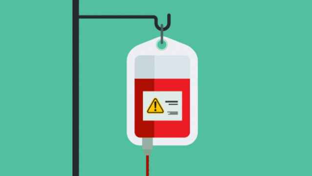

What are the risks of a blood transfusion?
The risks are:
- Blood transfusions are generally considered safe,
but there is some risk of complications.
Mild complications and rarely severe ones can occur
during the transfusion or several days or more after.
More common reactions include allergic reactions,
which might cause hives and itching, and fever
- Your immune system attacks the transfused red blood
cells because the donor blood type is not a good match.
The attacked cells release a substance into your blood that harms your kidneys.
